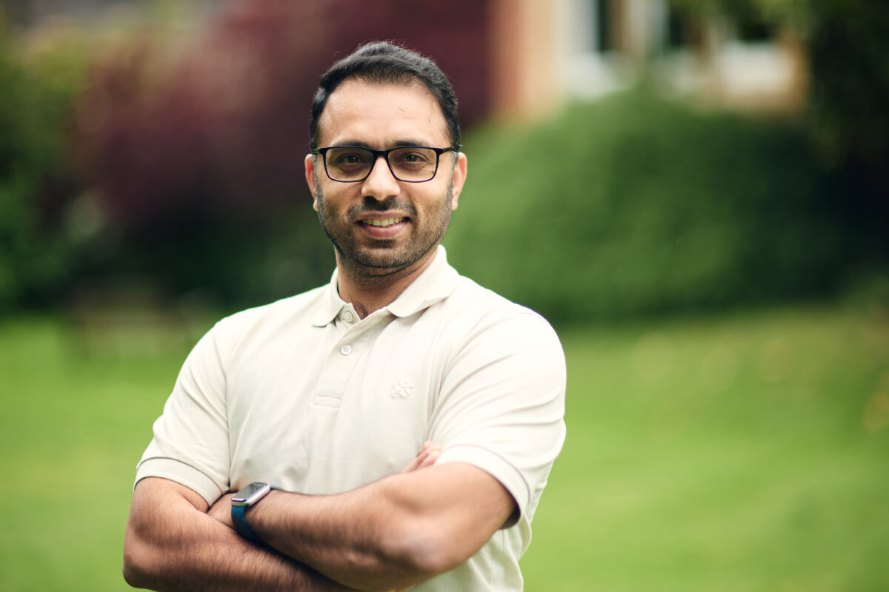

Graduate Support Scholarship
State of Thuringia, Germany · Approximately €35,000
Ideas, evidence & the public sphere
I'm Waqas Ejaz, a researcher working at the intersection of media, political communication, climate change and public opinion.
Explore my research →
I am a Research Associate at the Reuters Institute for the Study of Journalism, University of Oxford. My research examines how people encounter, interpret and respond to information about some of the most consequential issues facing contemporary societies.
Drawing on political communication, journalism studies and psychology, I investigate climate change communication, news consumption, misinformation, trust, political identities and public opinion.
My work is strongly comparative, examining how people in different political, cultural and media environments make sense of public issues. I am particularly interested in bringing perspectives from the Global North and South into the same conversation.
Before joining Oxford, I was an Assistant Professor at the National University of Sciences and Technology in Pakistan. I hold a PhD in Media and Communication Science from the Technical University of Ilmenau, Germany.
Academic background →How people understand climate change, respond to climate news and form attitudes towards action, policy and protest.
How audiences define news, navigate changing information environments and decide which sources to trust.
How media, political identities and social perceptions shape attitudes and behaviour across different societies.
Peer-reviewed journal articles, research reports and book chapters. Select a category to explore.
Funded by the Frederick S. Pardee School of Global Studies, Boston University.
Funded by the Technical University of Ilmenau, Germany.
State of Thuringia, Germany · Approximately €35,000
German Academic Exchange Service
My teaching experience spans political communication, media research, mass communication theory and climate change communication, across undergraduate and postgraduate settings.
Tutorials in Government and the Mass Media and International Mass Communication.
Co-examiner for the Climate Change Communication module at the Environmental Change Institute.
Courses in Social Media Research, Political Communication and Mass Communication Theories, alongside programme leadership.
A space for essays, research reflections and public-facing writing on journalism, climate change, politics and research methods.
Planned essay
Planned essay
Selected articles and coverage featuring or drawing on my research.
Keynote · Public Communication of Science and Technology Conference, Aberdeen, UK
Keynote · Regional International Communication Association, Lahore, Pakistan
City, University of London
University of Bath
Oxford School of Global and Area Studies, University of Oxford
Editorial board member, Communications Earth & Environment; Associate Editor, The International Journal of Press/Politics; Research Fellow, CITAP, University of North Carolina; Fellow, Green Templeton College, University of Oxford.
Downloadable CV to be added separately.